拟合数据与此前Dev分开；无新训练，无地理方向校正。绿色仅后验GT。
中文报告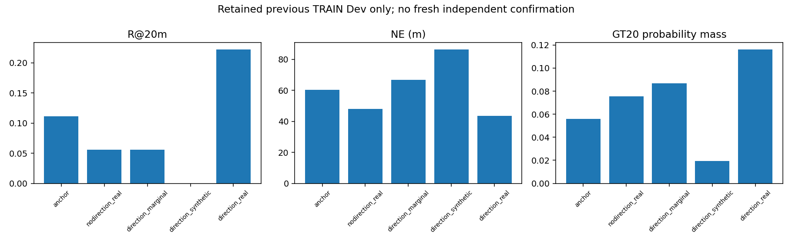
North of St. Teresa of the Child Jesus Catholic Church and to the left of Fill Circle Events & Exhibitions Ltd, this yellow car is in the far bottom right of the parking lot.
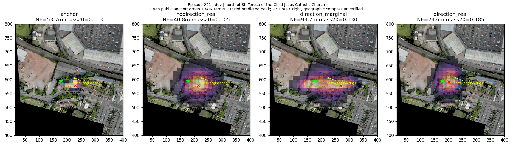
South of Celine Grove and to the left of St Teresa's Court, it is a black car, second car left of a red car.
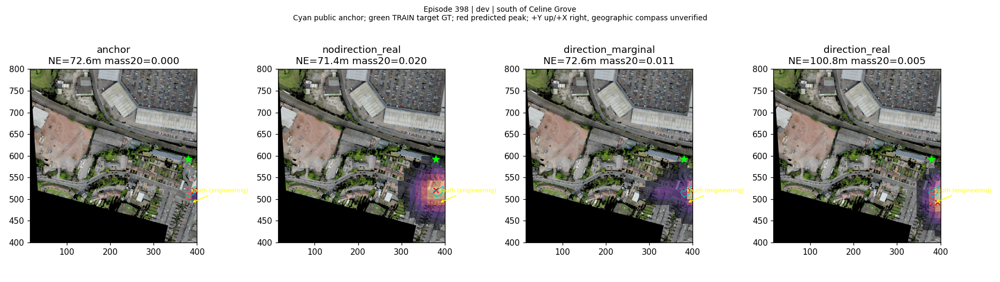
this is the white car, this car is north of St Teresa's Court building and to the right of this car are the red and black cars.
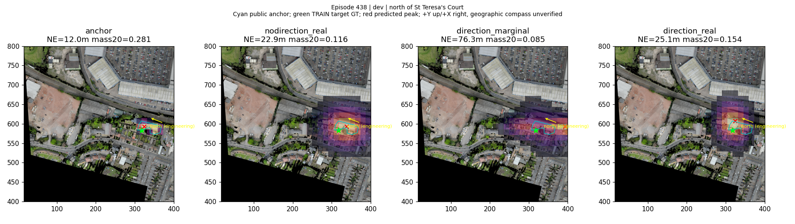
South of Celine Grove and to the left of St Teresa's Court,it is a white car, fifth car south of a tree.
this is one of the buildings south of Bragg Road. There is a blue and round object in the backyard of the building to the left of this building.
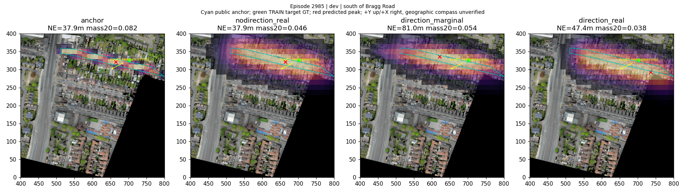
this gray roofed building is north of Stoneleigh Road and on the corner of Bragg Road. There are two white and one blue cars in front of the building, and a red car on the left.
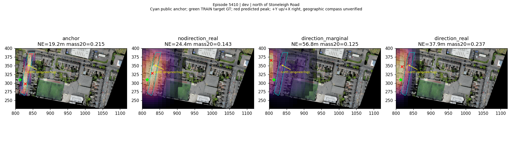
this is the white car and it is south of Aston Lane on the corner of Aston Lane/Wellhead Lane. south of this car another black car is partially visible.
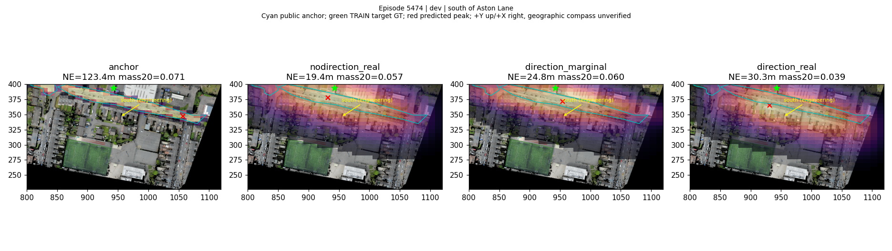
North of Aston Manor Close, this white roofed building is to the left of a green sport field.
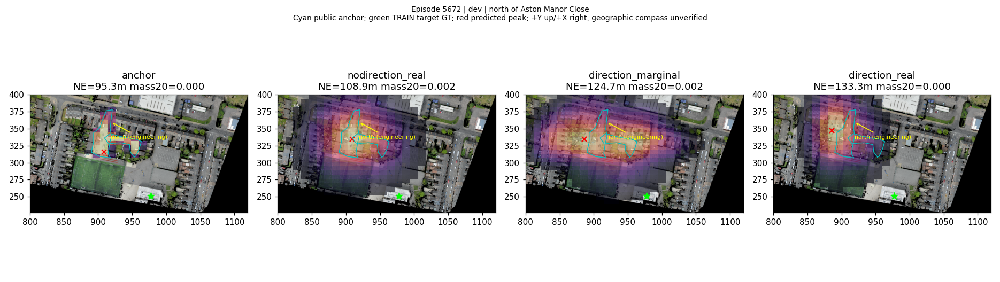
This is the T-shaped red-roofed building and is north of Aldridge Road. To the right of this building is a similar building and to the left is a tree, parking area and triangular green area.
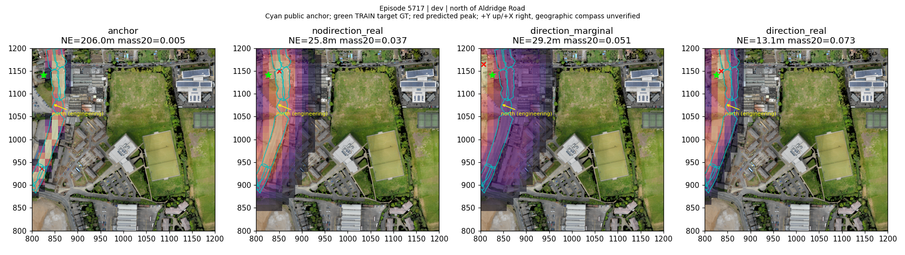
To the north of Perry Barr Bus Depot, this white car is fourth car from the right on the northmost row of the parking lot.
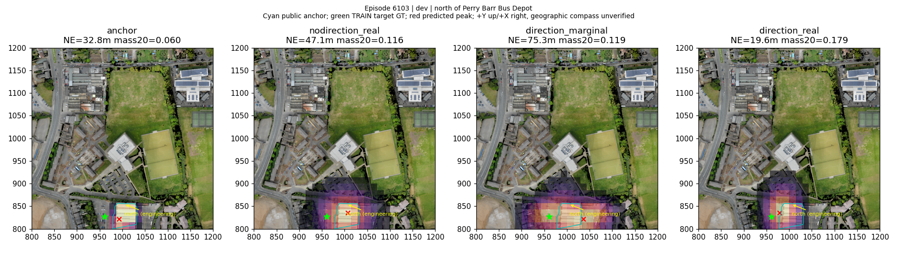
To the north of Perry Barr Bus Depot, this dark blue car is the car closest to three orange cubes in the parking lot.
this is the white car and it is on Holford Drive. To the north of this car is the West Midlands Police Custody Suite and to the south is a building with an invisible roof and partially visible walls.
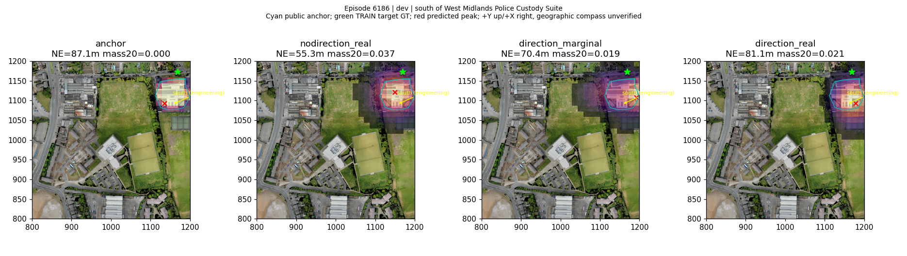
To the north of Perry Barr Bus Depot, this dark blue car is first car from the bottom on the leftmost row of the parking lot.
To the north of Perry Barr Bus Depot, this dark gray car is third car from the top on the third row from the left of the parking lot.
o the north of Perry Barr Bus Depot, this dark blue car is between a white car and an empty parking space,second car from the bottom on the rightmost row of cars facing right in the parking lot.
To the north of Perry Barr Bus Depot, this blue car is second car from the top on the middle row of the parking lot.
To the south of West Midlands Police Custody Suite, this blue car is near the building, facing a white car.
South of Weighbridge Offices, this gray roofed building has several cars, two green, parked next to it.
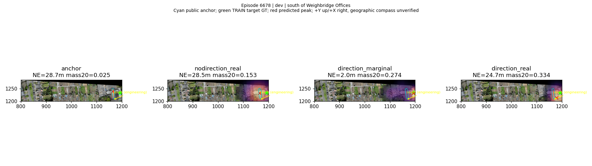
Between all the 17 Mill Lane buildings on Trumpington street, this dark blue roofed building is directly north of the Pitt Building.
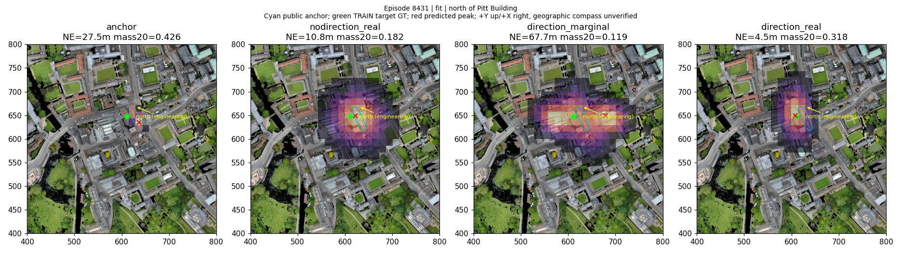
On the north side of Haymarket Road , this gray roofed building is the farthest left one and is south of Pound Hill House.
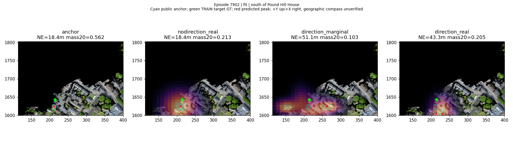